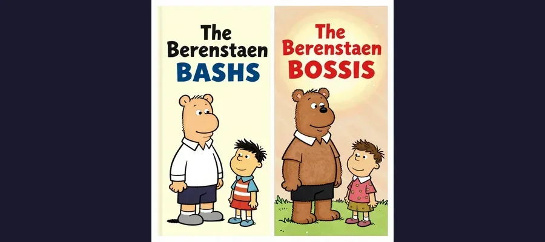
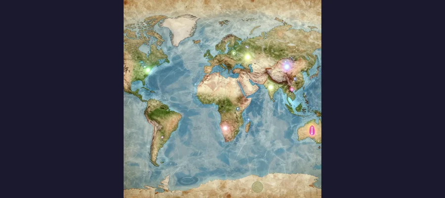

The Mandela Effect: Why Millions of People Remember a History That Never Happened

The Mandela Effect — a phenomenon where millions of people share vivid, detailed memories of events that never happened, suggesting either the fragility of human memory or something far stranger.
In 2009, a paranormal researcher named Fiona Broome was at a Dragon Con convention when she mentioned to a friend that she had vivid, detailed memories of Nelson Mandela dying in prison in the 1980s. She remembered the news coverage. She remembered the funeral. She remembered the mourning. She was certain. Her friend was equally certain — and equally wrong. Nelson Mandela did not die in prison. He was released from Victor Verster Prison in 1990, received the Nobel Peace Prize in 1993, was elected President of South Africa in 1994, and served until 1999. He died on December 5, 2013, at the age of 95. The funeral Broome remembered never happened — not in the 1980s, not the way she recalled. But Broome was not alone. When she wrote about her experience online, she discovered that thousands of people shared the same false memory. They, too, recalled news broadcasts, memorial services, and heartfelt tributes marking Mandela's death decades before it occurred. Broome coined a term for this phenomenon: the Mandela Effect — a situation where a large group of people share a vivid, confident, and completely false memory of an event, detail, or fact.
What began as a curious anecdote about one man's death has since become one of the most widely discussed psychological phenomena of the internet age. Millions of people around the world have discovered that their memories of movies, brand logos, historical events, geography, and even the color of common objects are demonstrably, provably wrong — and that millions of others share the same incorrect recollections. The Mandela Effect raises profound questions about the reliability of human memory, the nature of shared experience, and whether something far stranger than simple forgetting might be at work. Is it a psychological glitch? A social contagion? Or, as some have proposed with genuine conviction, evidence that we are sliding between parallel universes, carrying memories from realities that no longer exist — or never did?
Memories That Don't Match Reality: The Most Famous Mandela Effects
The Mandela Effect is best understood through its examples, and some of them are genuinely startling. These are not obscure trivia facts that a few people misremember. They are widely shared, deeply held false memories that have persisted even after being corrected — and in many cases, people who learn the truth report feeling a visceral sense of wrongness, as if the fabric of reality has been subtly altered.
Perhaps the most famous example is the Berenstain Bears. The beloved children's book series, created by Stan and Jan Berenstain, has been published under the name The Berenstain Bears since its inception. But an extraordinary number of people — possibly the majority of those who grew up with the books — remember the name as "Berenstein," with an '-ein' ending rather than '-ain'. The memory is often intensely specific: people recall the spelling on book covers, on library cards, on the title pages they read as children. Some claim to have found old merchandise or book covers with the '-stein' spelling, though no such items have ever been verified. The actual name has always been Berenstain, matching the authors' real surname.
Then there is the most famous movie misquote in history. In The Empire Strikes Back (1980), Darth Vader reveals his identity to Luke Skywalker in one of cinema's most iconic moments. The line most people remember is: "Luke, I am your father." The actual line is: "No, I am your father." Vader never says "Luke" in that scene. The misquote is so pervasive that it has appeared in official Star Wars merchandise, advertisements, and even other movies — a case where the false memory has been reinforced by the culture until it has effectively replaced the original.
🤔 The Monopoly Man Was Never What You Think
Quick: picture the Monopoly Man, the mustachioed mascot of the classic board game. Does he wear a monocle? If you said yes, you are in the vast majority — and you are wrong. Rich Uncle Pennybags has never worn a monocle in any official rendition of the character. The confusion likely arises from a mental blending with other imagery: Mr. Peanut, the Planters mascot, wears a monocle and a top hat; the classic "monopoly man" archetype in popular culture frequently includes a monocle as shorthand for wealth. Your brain, presented with a top-hatted, mustachioed rich man, helpfully fills in the monocle because it "fits" — a process psychologists call confabulation, where the brain inserts plausible details into memories to create a coherent narrative. The same process explains why so many people remember Curious George having a tail (he never did — he's an ape, not a monkey), why many recall Pikachu's tail having a black tip (it's entirely yellow), and why people picture Henry VIII holding a turkey leg in portraits (no such portrait exists).

The Berenstain Bears — or is it the Berenstein Bears? Millions of people vividly remember the “-stein” spelling, yet every book, TV episode, and official source has always spelled it “-ain.” This is the single most-cited example of the Mandela Effect.
- "Mirror, mirror on the wall" — The actual line from Disney's Snow White (1937) is "Magic mirror on the wall." The "mirror, mirror" version comes from the original Grimm fairy tale, not the film.
- "Life is like a box of chocolates" — Forrest Gump actually says "Life WAS like a box of chocolates." The past tense is crucial to the line's meaning.
- "Elementary, my dear Watson" — Sherlock Holmes never speaks this exact phrase in any of Arthur Conan Doyle's original stories. The closest match is from the 1929 film The Return of Sherlock Holmes.
- Dolly's braces in Moonraker — Many viewers vividly remember the character Dolly having metal braces on her teeth in the 1979 James Bond film, creating a comedic visual connection to the villain Jaws. She does not have braces in any frame of the film.
- Chartreuse color — Many people believe chartreuse is a reddish-pink or magenta color. It is actually yellow-green, named after the French liqueur.
- The number of U.S. states — A surprising number of people remember being taught there are 52 states. The actual number is, and has always been, 50.
- "Luke, I am your father" — The actual line is "No, I am your father." Vader never says "Luke" in the reveal scene.
Geographic Mandela Effects: Maps That Don't Match Memory
Some of the most disorienting Mandela Effects involve geography. Many people recall New Zealand being located to the northwest of Australia, when it is actually to the southeast. Others remember South America being directly south of North America, when it is actually shifted significantly to the east. Sri Lanka is remembered by some as being west of India rather than to its south. These geographic misrememberings are particularly striking because they involve spatial memory — the mental maps we carry in our heads — rather than verbal or visual details. They suggest that the Mandela Effect is not simply a matter of confusing similar-sounding words or conflating similar images, but something more fundamental about how the brain constructs and stores models of the world.
The Science of False Memory: Why Your Brain Lies to You
The dominant scientific explanation for the Mandela Effect lies in the work of cognitive psychologists, particularly Dr. Elisabeth Loftus, a professor at the University of California, Irvine, who has spent decades studying the malleability of human memory. Loftus's research has demonstrated that memory is not a recording device — it is a reconstructive process. Every time you recall an event, your brain assembles it from fragments, filling in gaps with assumptions, expectations, and information acquired after the fact. This process is called confabulation, and it happens below the level of conscious awareness.
In her famous "Lost in the Mall" experiment (1995), Loftus and her colleague Jacqueline Pickerel demonstrated that approximately 25 percent of participants could be made to "remember" a completely fictional childhood event — being lost in a shopping mall as a child — simply through guided suggestion and follow-up interviews. The participants didn't just agree that the event might have happened; they developed rich, detailed, confident memories of the experience, including specific sensory details and emotional responses, for an event that never occurred. This finding has been replicated numerous times and has profound implications for the Mandela Effect: if a single individual can be led to construct a vivid false memory through suggestion, then an entire culture can construct shared false memories through repetition, social reinforcement, and media exposure.
🧠 How Your Brain Rewrites History in Real Time
Psychologists have identified several specific mechanisms that produce Mandela Effects. Schemas are mental frameworks that help us organize information — your schema for "rich old man in a top hat" includes a monocle, so your brain helpfully adds one to the Monopoly Man. Source monitoring errors occur when you remember information accurately but attribute it to the wrong source — you recall hearing "Luke, I am your father" from a parody, a friend, or a meme, and your brain files it under "actual movie quote." Social reinforcement amplifies the effect: when you discuss a false memory with others who share it, the shared confidence makes the memory feel more real. Confabulation fills gaps with plausible details — Henry VIII was famously a large, appetites-driven king, so your brain adds a turkey leg to his portrait because it "fits" the story. And leading questions can permanently alter memories: Loftus showed that asking witnesses "How fast were the cars going when they SMASHED into each other?" versus "hit each other" produced significantly different speed estimates and even caused witnesses to "remember" broken glass that wasn't there.

Geographic Mandela Effects: millions of people place New Zealand northwest of Australia (it’s southeast), remember South America directly below North America (it’s east), and recall Sri Lanka in different positions. Could entire populations be misremembering the layout of continents?
Brand Logos and the Mandela Effect in Commerce
The Mandela Effect extends to the commercial world with surprising frequency. Many people remember the Ford logo with a curl or loop at the end of the 'F' that doesn't exist. The Volkswagen logo is remembered by many as having a continuous horizontal line through the middle, when the actual logo has a gap where the 'V' meets the 'W'. Some recall a dash in Coca-Cola's logo between "Coca" and "Cola" that has never been part of the official branding. The Kit Kat logo is remembered with a hyphen ("Kit-Kat") by many, though the official brand name has never included one. These commercial Mandela Effects are particularly interesting because they involve high-frequency exposure — most people have seen the Ford logo thousands of times, yet their memory of it is wrong. This challenges the intuitive assumption that repeated exposure should produce accurate recall, and instead suggests that the brain prioritizes pattern recognition and coherence over photographic accuracy.
- False memory and confabulation — The brain reconstructs memories from fragments each time they are recalled, filling gaps with plausible but incorrect details.
- Schemas and stereotypes — Mental frameworks cause the brain to add expected features (monocle on a rich man, tail on a monkey character) that were never actually present.
- Source monitoring errors — Information encountered in one context (a parody, a conversation, a meme) is attributed to a different context (the original movie, book, or event).
- Social reinforcement — Shared false memories become stronger and more confident through group discussion, online communities, and media coverage.
- The power of suggestion — Leading questions, media framing, and cultural assumptions can permanently alter the way memories are stored and retrieved.
- Primacy of narrative coherence — The brain prioritizes stories that "make sense" over accurate details, preferring a coherent false memory to an incoherent true one.
Parallel Universes, Simulation Glitches, and the Paranormal Explanations
Not everyone accepts the psychological explanation. For millions of people, the Mandela Effect feels too specific, too widely shared, and too "real" to be explained by faulty memory alone. They point to cases where the false memory seems more vivid and detailed than the correct one, where people produce "residue" — old books, articles, or images that seem to support the remembered version — and where the sheer number of people who share the same incorrect recollection strains the limits of what confabulation and source monitoring can explain. These individuals have proposed alternative explanations that range from speculative physics to outright science fiction — and some of them are taken very seriously by their proponents.
The most popular paranormal theory is the parallel universes or multiverse hypothesis. In this framework, the Mandela Effect occurs when an individual or group shifts from one universe to another — or when the "timelines" of multiple universes somehow intersect or merge. The false memories are not false at all; they are accurate memories of events that happened in a different reality, a reality in which Mandela died in prison, the Bears were Berenstein, and Vader said "Luke." The theory draws on legitimate physics concepts — the many-worlds interpretation of quantum mechanics, proposed by physicist Hugh Everett III in 1957, suggests that every possible outcome of every event is realized in some branch of reality. But the leap from "the math permits parallel universes" to "you remember Berenstein Bears because you came from a universe where they were spelled that way" is, to put it mildly, not supported by evidence.
⚙️ CERN, the Large Hadron Collider, and Reality Glitches
One of the most elaborate Mandela Effect theories involves CERN, the European Organization for Nuclear Research, and its Large Hadron Collider (LHC), the world's largest and most powerful particle accelerator. The theory, which has circulated widely on YouTube, Reddit, and conspiracy forums, claims that CERN's particle physics experiments — particularly the detection of the Higgs boson in 2012 — altered the fabric of reality, causing subtle changes to the past that manifest as Mandela Effects. Proponents point to CERN's own messaging, including a 2015 video in which CERN researchers appeared to "celebrate" by performing a mock human sacrifice near the facility, as evidence that something sinister is happening. (CERN dismissed the video as a prank by employees who had access to the grounds.) The CERN theory intersects with simulation hypothesis — the idea, proposed by philosopher Nick Bostrom in 2003, that our reality may be a computer simulation, and that Mandela Effects are "glitches" in the code. While neither theory has any empirical support, both have been endorsed by millions of people online, demonstrating the extraordinary appeal of explanations that externalize the source of memory errors — placing the fault not in our brains but in reality itself.
🧠 The Memory That Remembers Us
The Mandela Effect is not a mystery of the external world, like the Loch Ness Monster or the Roswell UFO incident. It is a mystery of the internal one — the vast, complex, and deeply unreliable apparatus of human memory. The evidence from decades of cognitive psychology is clear: memory is not a recording. It is a reconstruction, assembled fresh each time it is called upon, vulnerable to suggestion, distortion, and the quiet editing of a brain that values narrative coherence over factual accuracy. The false memories at the heart of the Mandela Effect are not evidence of parallel universes or simulation glitches. They are evidence of something equally extraordinary: that the minds of millions of people, operating independently across decades and continents, can converge on the same incorrect version of reality — and that once that version is established, it is almost impossible to dislodge. Like the enduring faith placed in the Shroud of Turin despite carbon dating evidence, the confusion surrounding the fate of Anastasia Romanov despite DNA proof, or the worldwide panic created by the chupacabra despite genetic testing, the Mandela Effect reveals something fundamental about human nature: we do not experience the world as it is. We experience it as our brains construct it — and those constructions, once formed, are more real to us than reality itself. The question the Mandela Effect ultimately asks is not whether parallel universes exist. It is whether we can ever truly trust the evidence of our own minds — and the answer, science suggests, is far more unsettling than any multiverse theory.
Frequently Asked Questions
What exactly is the Mandela Effect?
The Mandela Effect is a phenomenon in which a large group of people share a false memory that they are confident is true. The term was coined by paranormal researcher Fiona Broome in 2009, after she discovered that she and many others vividly remembered Nelson Mandela dying in prison in the 1980s — an event that never happened. Mandela was released from prison in 1990, elected President of South Africa in 1994, and died in 2013. The Mandela Effect has since been applied to hundreds of shared false memories involving movies, brands, geography, and historical events.
Is there any scientific evidence for the Mandela Effect?
Yes, but not for the paranormal explanations. Decades of research in cognitive psychology, particularly the work of Dr. Elisabeth Loftus at UC Irvine, have demonstrated that human memory is highly malleable and subject to distortion through suggestion, social reinforcement, and the brain's tendency to fill gaps with plausible details. The scientific consensus is that Mandela Effects are best explained by false memory psychology, including confabulation, source monitoring errors, and schema-driven misremembering — not by parallel universes or reality alterations.
Why do so many people remember the same wrong things?
Shared false memories arise because humans share similar cognitive architectures and cultural experiences. We are all exposed to the same movies, brands, maps, and stories. When a detail is ambiguous or unfamiliar, our brains use the same schemas and assumptions to fill in the gaps — producing the same "errors" across millions of people. Social media then amplifies and reinforces these shared errors, creating communities of people who validate each other's false memories and make them feel more real.
Can the Mandela Effect be explained by parallel universes?
The parallel universes explanation has no empirical support. While the many-worlds interpretation of quantum mechanics is a legitimate (though unproven) theoretical framework in physics, the idea that people are "shifting" between universes and carrying memories from one reality to another is not supported by any scientific evidence. Cognitive psychologists have demonstrated that all known Mandela Effects can be explained by well-understood mechanisms of memory distortion without invoking supernatural or science-fiction explanations.
📖 Recommended Reading
Want to learn more? Check out The Mandela Effect: a history: the first discoveries and what people said (Mandela Effect Books): Broome, Fiona: 9781889157108 on Amazon for a deeper dive into this fascinating topic. (As an Amazon Associate, we earn from qualifying purchases.)
References & Further Reading
- Wikipedia: Mandela Effect — Comprehensive overview of the phenomenon, its origins, and major examples
- Britannica: Mandela Effect — Definition, origins, examples, and potential causes
- Wikipedia: False Memory — Scientific research on the malleability of memory and confabulation
- Wikipedia: Elisabeth Loftus — Pioneering researcher on false memory and the misinformation effect
- Frontiers in Psychology: The Psychology of the Mandela Effect — Academic analysis of collective false memory
- Britannica: False Memory — Overview of the cognitive science of memory distortion
- Wikipedia: Many-Worlds Interpretation — The quantum mechanics theory that inspires parallel universe explanations
Editorial note: reconstructions are continuously revised as imaging and inscription studies improve. See our Editorial Policy.